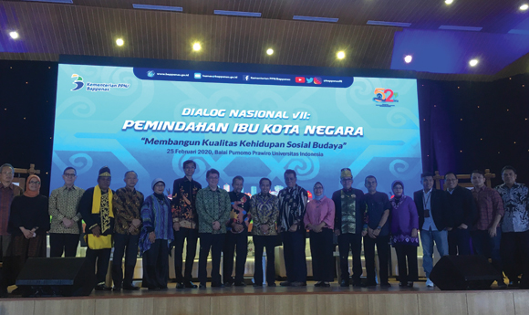
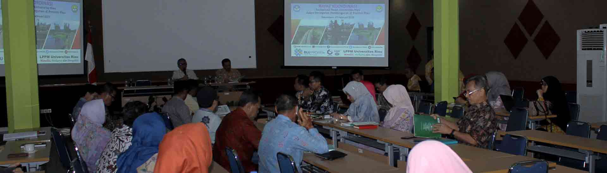

Berita
Bappenas Libatkan UI dalam Pembahasan Pemindahan Ibu Kota Negara (Universitas Indonesia)

Kementerian Perencanaan Pembangunan Nasional (PPN/Bappenas) kembali melibatkan Universitas Indonesia (UI)
dalam pembahasan mengenai pemindahan Ibu Kota Negara (IKN). Baca selanjutnya di
Selengkapnya
Sistem Pencegahan dan Pengendalian Penyakit Perlu Diperkuat (Universitas Gadjah Mada)
Ketahanan suatu negara terhadap ancaman penyakit menular bergantung pada kemampuannya
dalam mencegah serta mengendalikan penyakit. Untuk itu, sistem kesehatan nasional perlu
terus diperkuat untuk menghadapi ancaman-ancaman baru yang mungkin belum pernah dihadapi
sebelumnya. Baca selanjutnya di
Selengkapnya
UNRI Ajak Pemerintah Kabupaten dan Kota Untuk Gali Potensi Daerah (Universitas Riau)

Pendidikan Tinggi sebagai bagian dari sistem pendidikan nasional memiliki peran
strategis dalam mencerdaskan kehidupan bangsa dan berpartisipasi aktif dalam
proses pembangunan daerah. Universitas Riau (Unri) sebagai bagian dari sistem
pendidikan yang ada di Riau, ikut ambil bagian dalam rangka melakukan berbagai
upaya untuk pembangunan daerah yang ada di Provinsi Riau. Baca selanjutnya di
Selengkapnya